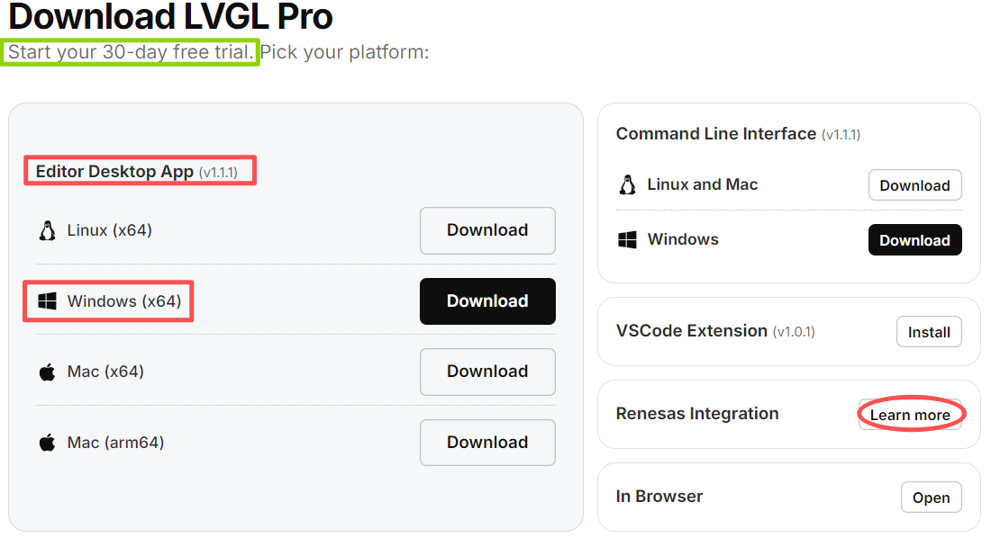
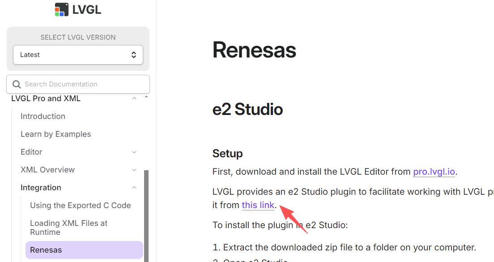
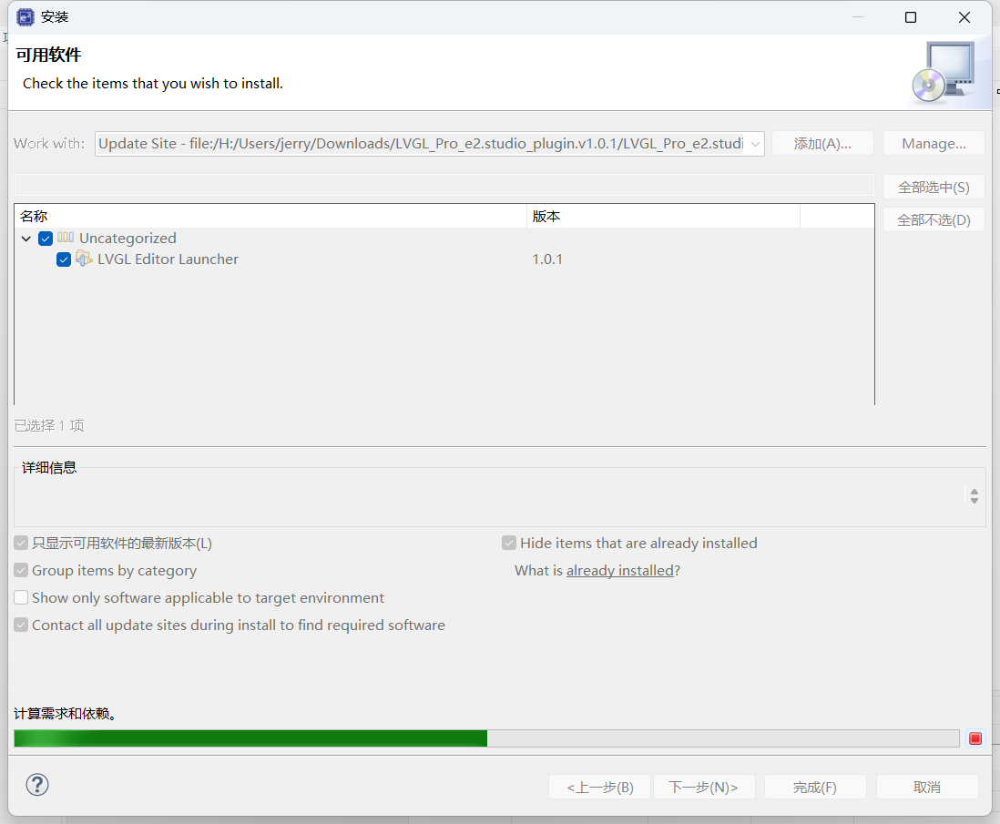
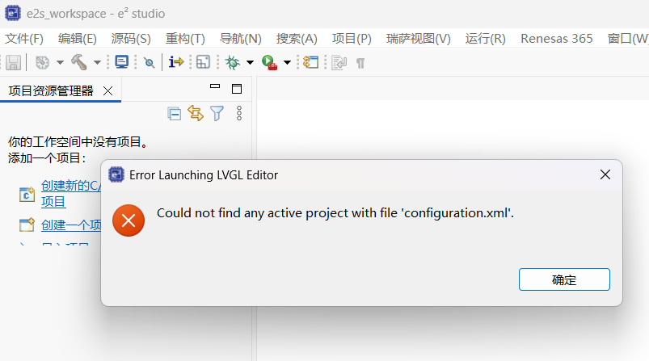
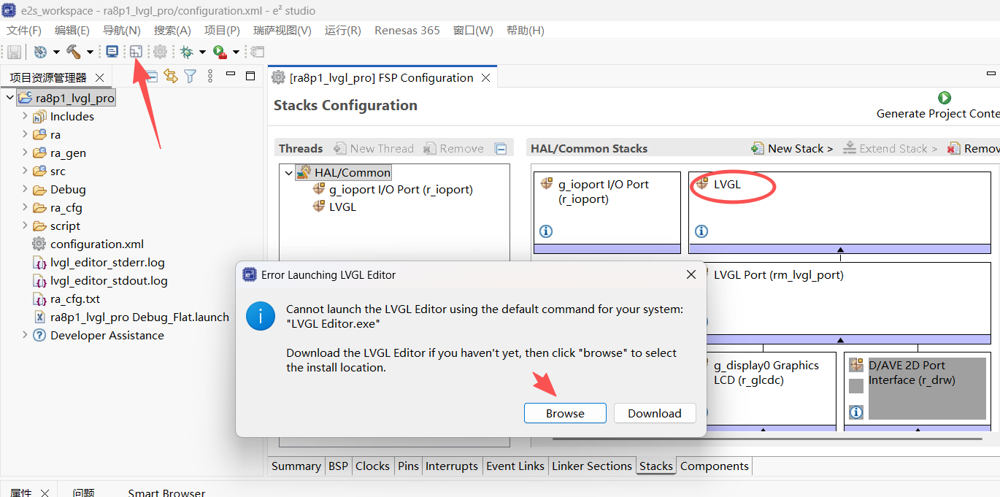
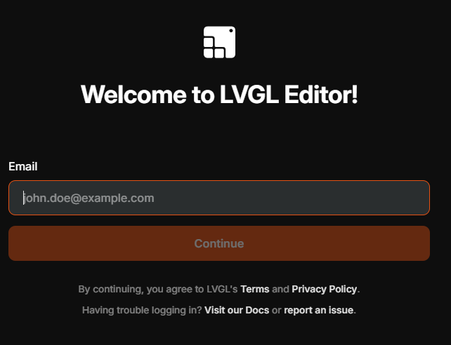
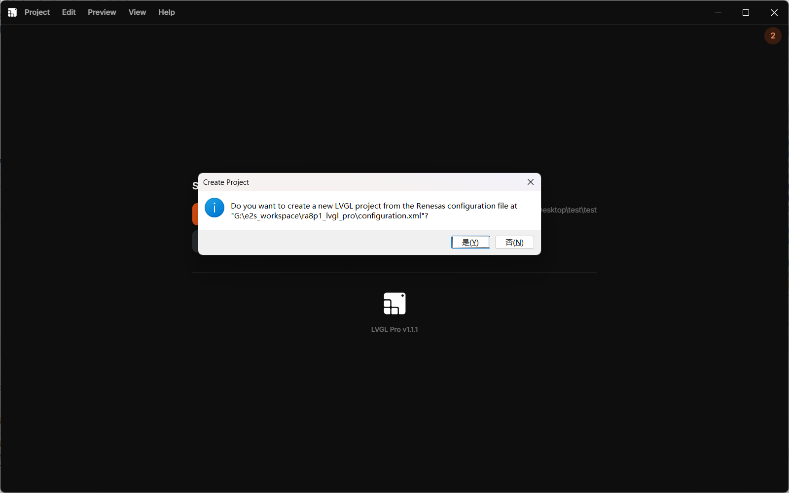
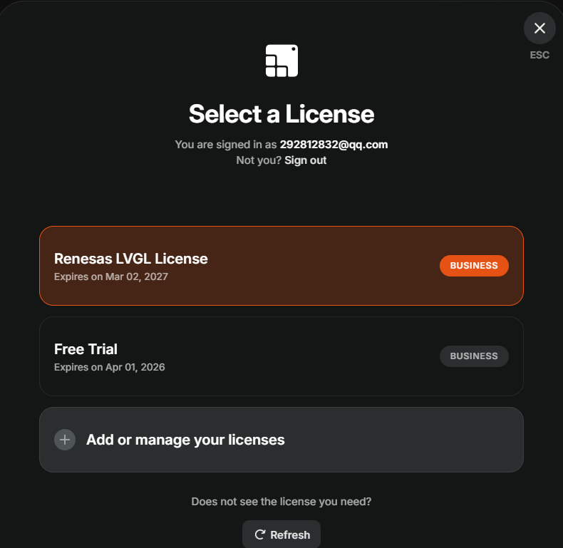
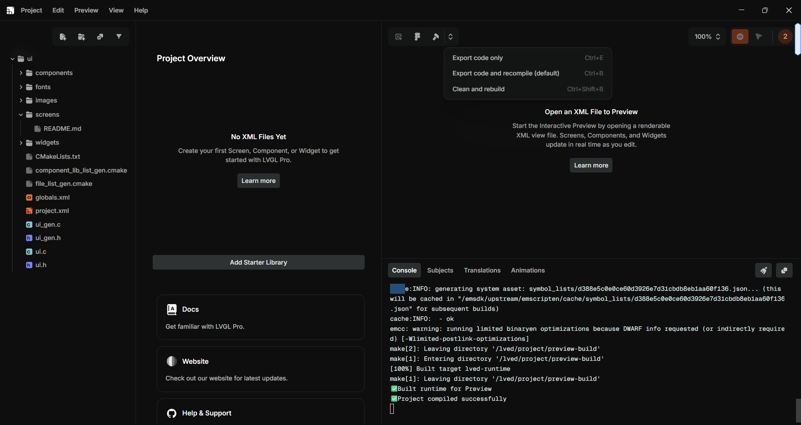
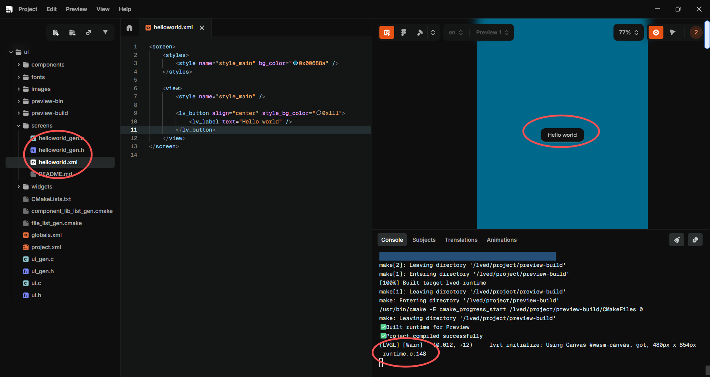

瑞萨电子与LVGL官方合作，为瑞萨客户免费提供LVGL Pro商用授权。LVGL Pro是一款专业的嵌入式GUI编辑器，支持实时预览、自动生成C代码等功能。本文旨在详细介绍如何：
lvgl-editor-*.exe）
LVGL_Pro_e2.studio_plugin.v*.zip）D:\lvgl_plugin），确保文件夹内包含 features 和 plugins 子目录Help → Install New Software...Add... → Local...，选择刚才解压的文件夹，命名后点击 Add

LVGL Pro的预览功能依赖Linux容器环境，Windows下必须配置WSL和Podman。
wsl --install，安装默认Ubuntu发行版wsl -l -v，应看到Ubuntu处于Running状态注意：盗版Windows可能无法安装WSL，建议下载安装微软win11 iso
podman-machine-default 的虚拟机如果预览时因网络问题拉取镜像失败（i/o timeout），需在Podman虚拟机内配置国内镜像加速器：
podman machine sshsudo vi /etc/containers/registries.confdocker.1ms.run作为示例加速源）先下载lvglio_emscripten-sdl2_0.2.0-amd64，然后导入podman
podman load -i lvglio_emscripten-sdl2_0.2.0-amd64.tar
e² studio中新建Renesas RA C/C++工程，选择芯片型号（如R7FA8P1）
在FSP配置中，确保已添加LVGL组件


点击e² studio工具栏的LVGL图标
首次启动需指定LVGL Editor可执行文件路径（lvgl-editor.exe）
编辑器将自动在工程根目录创建 ui 文件夹




在编辑器左侧文件树中，右键 screens 文件夹 → Create new screen，命名为 screen_hello_world.xml
<screen>
<styles>
<style name="style_main" bg_color="0x00688a" />
</styles>
<view>
<style name="style_main" />
<lv_button align="center" style_bg_color="0x111">
<lv_label text="Hello world" />
</lv_button>
</view>
</screen>

LVGL Pro为瑞萨用户提供了免费商用的可视化GUI开发途径，显著提升开发效率。
集成的关键在于正确安装e² studio插件、配置WSL和Podman环境。
编辑器与IDE的深度集成（自动创建ui文件夹、代码自动同步）简化了工作流程。